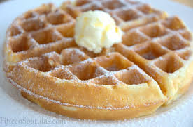

Classic Big Breakfast Waffle Recipe

Breakfast is a special meal of the day, whether it's actually the "most" important or just an excuse to have dessert in the morning. Nevertheless, a big waffle is always a delight to see when you wake up in the morning. The pockets holding puddles of syrupy goodness, the fruit complementing every bite you take. A dollop of butter almost looks as amazing as ice cream, adding to the flavor of this fluffy cloud. It's almost a bite of heaven. And it's time for us to explore it.
INGREDIENTS:
- 2 eggs
- 2 cups all-purpose flour
- 1 3/4 cups milk
- 1/2 cup vegetable oil
- 1 tablespoon sugar
- 4 teaspoons baking powder
- 1/4 teaspoon salt
- 1/2 teaspoon vanilla extract
- 1/2 teaspoon cinnamon
STEPS:
- Beat up your eggs in a large bowl
- Combine the rest of your ingredients into the bowl and give it a good whisking
- Place your batter into the waffle iron and let it do it's thing (until it's golden brown).
- Place your waffle on a plate and enjoy!
- (OPTIONAL) consider adding toppings like powdered sugar, butter, fruit (my favorite is bananas), jams, or even boston creme!